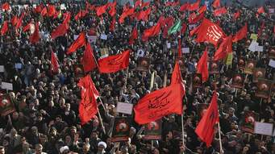

CONFLICTOS EN EL ORIENTE MEDIO
ATENTADOS TERRORISTAS EN EUROPA
Al terminar la Guerra del Yom Kippur se producen acontecimientos contradictorios. Y es que aunque por un lado, la guerra lleva a la firma de la paz entre Israel y Egipto (1979), nuevas tensiones surgen en el Líbano, Iran e Irak. Dichas tensiones su inicio en este periodo y constituyen un adelanto de lo que será el panorama internacional al terminar la Guerra Fría.
Este conflicto se inició como respuesta al intento de asesinato del embajador israelí Shlomo Argov en el Reino Unido, por parte del grupo de Abu Nidal. Después de esto, el ejército israelí atacó el Líbano durante 4 y 5 de junio de 1982. La OLP respondió con un masivo ataque de artillería y ataques de mortero contra la población israelí de la Galilea. Para el 6 de junio, el ejercito israelí se trasladó a Líbano para expulsar a los terroristas, dando origen a la “Operación paz para Galilea”.
Algunos hechos y acontecimientos importantes fueron:
6 de junio de 1982. Las fuerzas armadas de Israel invadieron el Líbano en la campaña “Operación Paz para Galilea” con 5 objetivos fundamentales:
1º. Eliminar la amenaza de la OLP en la frontera norte de Israel.
2º. Destruir la infraestructura de la OLP.
3º. Crear un gobierno libanés estable.
4º. Retirar la presencia militar siria en el Valle de la Bekaa.
5º. Fortalecer la posición de Israel en la Ribera Occidental.
El fin del conflicto tuvo lugar tras los sangrientos combates, el Líbano deja de ser base de operaciones para los combatientes palestinos. En 1983, el presidente del Líbano, firmó un tratado de Paz con Israel. Las consecuencias de este conflicto fueron un vacío político resultante de la retirada de Israel que llevaría a la ocupación de Siria del Líbano. Esta, ganaría mas poder sobre el Líbano de lo que tenían.
Las reformas modernizadoras emprendidas por el Sha Reza Pahlevi en el marco de una dictadura corrupta y bajo una fuerte influencia norteamericana ocasionaron un importante descontento social. Pese a la brutal represión de las fuerzas policiales, largos meses de protestas provocaron la huida del Sha y el fracaso del intento de mantener un régimen pro-occidental bajo el primer ministro Bajtiar. El Ayatollah Jomeini retornó desde su destierro de Francia el 1 de febrero de 1979, en medio de enormes manifestaciones.
El 1 de abril tras una victoria en un referéndum, Jomeini proclamó la República Islámica a la que pronto se le asignó una Constitución que reflejaba los ideales de gobierno islámico. Inmediatamente, se tomaron medidas fundamentalistas y comités revolucionarios patrullaron las calles para obligar a cumplir las leyes de comportamiento y vestimenta. Mientras el régimen trataba de borrar cualquier vestigio de influencia occidental. El nuevo Irán islámico se enfrentaba directamente con las dos superpotencias. Los primeros años del gobierno revolucionarios se caracterizaron por la eliminación de toda la oposición política en el marco de una represión brutal. El estallido de la guerra con Irak en septiembre de 1980, tras el ataque del régimen de Saddam Hussein, supuso una gran tragedia para ambos pueblos y fortaleció la dictadura de los clérigos. El fin de la guerra en 1988 y la muerte de Jomeini en 1989 abrieron una nueva etapa en la historia del Irán islámico.
El conflicto empieza por una disputa territorial sobre las márgenes del Shatt al-Arab, río formado por la confluencia del Tigris y el Éufrates, zona rica en petróleo. Saddam tuvo también en cuenta el aislamiento internacional del régimen de Jomeini. En septiembre de 1980, las tropas iraquíes lanzaron un ataque que, pese a conseguir avances en torno a 80-120 kilómetros, no fue suficiente para la resistencia de las milicias iraníes formadas por los Guardianes de la Revolución. En adelante se inició una dura y larga guerra en la que se utilizó armamento suministrado por países extranjeros. Irak recibió apoyo de Arabia Saudí, Kuwait y otros estados árabes y fue apoyado por los EE.UU. y la URSS. Mientras, Irán sólo contó con el apoyo de Siria y Libia, estados árabes enfrentados a Saddam Hussein. Pese a ser visto como un freno a la expansión del islamismo radical de Jomeini, el régimen de Saddam Hussein empezó a ser cuestionado internacionalmente por la utilización de armas químicas contra los iraníes y contra la propia población kurda del norte de Irak.
Finalmente, las dificultades económicas acabaron por apear a Jomeini de su negativa a cualquier tipo de acuerdo. En agosto de 1988 Irán aceptó un cese el fuego que había sido elaborado por las Naciones Unidas. La guerra acabó en un empate pero las pérdidas humanas fueron enormes. Se habla de un millón de muertes, pero hay que fuentes que doblan esa cifra. Quizá se pueda cifrar las muertes en medio millón de personas, con Irán como el país que sufrió más duras pérdidas. El coste de la guerra y la búsqueda de medios económicos para enfrentarla fue uno de los elementos clave para que Saddam Hussein atacara Kuwait en 1990. La guerra del Golfo de 1991 fue el resultado de ese nuevo ataque del dictador iraquí.